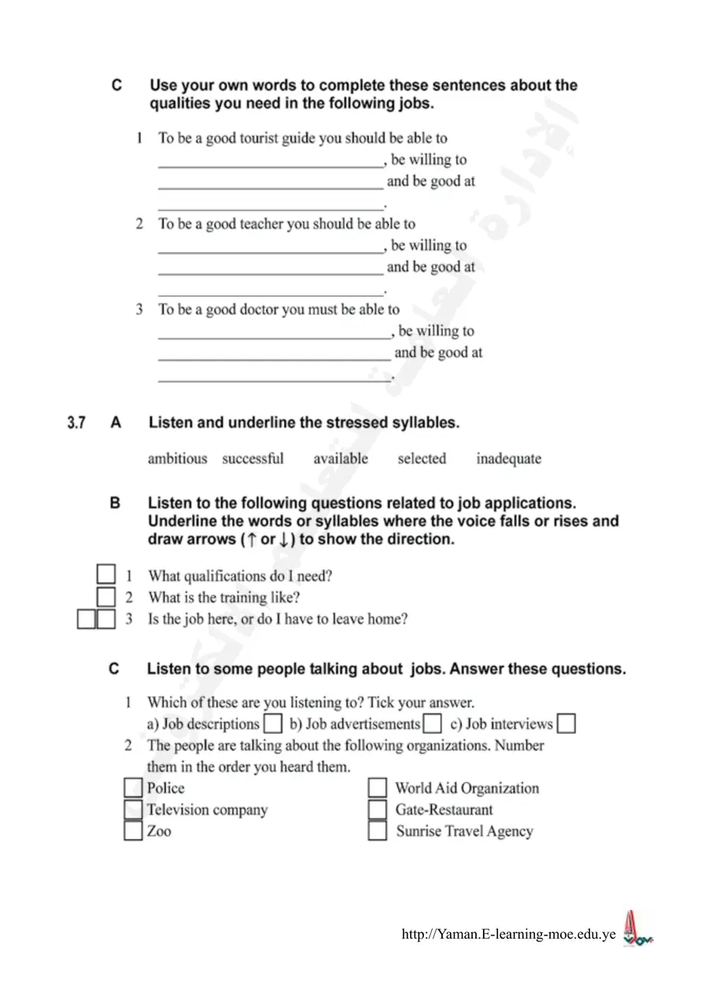

3.7 A Listen and underline the stressed syllables. ambitious successful available selected inadequate B Listen to the following questions related to job applications. Underline the words or syllables where the voice falls or rises and draw arrows (↑ or ↓) to show the direction. [ ] 1 What qualifications do I need? [ ] 2 What is the training like? [ ] [ ] 3 Is the job here, or do I have to leave home?
C Listen to some people talking about jobs. Answer these questions. 1 Which of these are you listening to? Tick your answer: a) Job descriptions [ ] b) Job advertisements [ ] c) Job interviews [ ] 2 The people are talking about the following organizations. Number them in the order you heard them. [ ] Police [ ] World Aid Organization [ ] Television company [ ] Gate-Restaurant [ ] Zoo [ ] Sunrise Travel Agency (WB p. 36) D Listen again and fill in the table below. The first one has been done for you. M = Male F- Female Columns: Vacancy | M/F | Quals. | Age | Contact Row 1 (given): Teaching / Work in clinic | Both | Good Health | Under 20 | P.O.Box 791 Rows 2–6: (empty boxes for audio completion) E In your copybooks, use your notes from activity D to summarize the advertisements like this: The World Aid Organization has vacancies for ... / Applicants must ... / Applicants should ...
F- Female بشرطة بدل علامة يساوي في WB p. 36.[
{
"num": 1,
"prompt": "1 Stressed syllable in 'ambitious': am-______-tious",
"answers": [
"bi"
]
},
{
"num": 2,
"prompt": "2 Stressed syllable in 'successful': suc-______-ful",
"answers": [
"cess"
]
},
{
"num": 3,
"prompt": "3 Stressed syllable in 'available': a-______-able",
"answers": [
"vail"
]
},
{
"num": 4,
"prompt": "4 Stressed syllable in 'selected': se-______-ed (se-lec-ted → stem lec/lect)",
"answers": [
"lec"
]
},
{
"num": 5,
"prompt": "5 Stressed syllable in 'inadequate': in-______-equate",
"answers": [
"ad"
]
},
{
"num": 6,
"prompt": "6 Intonation for Q1 'What qualifications do I need?' and Q2 'What is the training like?': ______",
"answers": [
"falling (↓)"
]
},
{
"num": 7,
"prompt": "7 Intonation for Q3 'Is the job here, or do I have to leave home?': ______",
"answers": [
"rising (↑) then falling (↓)"
]
}
][
{
"num": 1,
"question": "C1: Which of these are you listening to (proved by E 'summarize the advertisements')? & Which organization is #1?",
"model_answer": "b) Job advertisements (confirmed explicitly by E: 'summarize the advertisements'). Organization #1 is World Aid Organization (confirmed by Row 1 + E: 'The World Aid Organization has vacancies for...').",
"explain_ar": "صياغة النشاط E تصرّح مباشرة بنوع التسجيل وبأن المنظمة الأولى هي World Aid Organization."
},
{
"num": 2,
"question": "D & E Model Summary for Organization #1 (Row 1 data given in table):",
"model_answer": "The World Aid Organization has vacancies for teachers and clinic workers (teaching / work in clinic). Applicants must be in good health and under 20 (both male and female may apply). They should write to P.O. Box 791.",
"explain_ar": "تطبيق مباشر لنموذج E باستخدام بيانات الصف الأول المحلول في الجدول بـ WB ص 36؛ أما الصفوف 2–6 فمسجّلة في REVIEW_NEEDED.md لعدم توفر الشريط."
}
]{
"wb_ocr_vs_image": "قُورنت صفحتا WB ص 35–36 مع tesseract.js eng: أخرجت OCR قيماً عشوائية للجدول الفارغ ('IC ET CT', 'Hl', 'SE A') وصُحّحت كلها بصرياً عبر wb-036.png وwb-037.png؛ وحُفظ الاختصار الحرفي 'F- Female'؛ وسُجّل غياب الشريط الصوتي لصفوف D 2–6 في REVIEW_NEEDED.md."
}